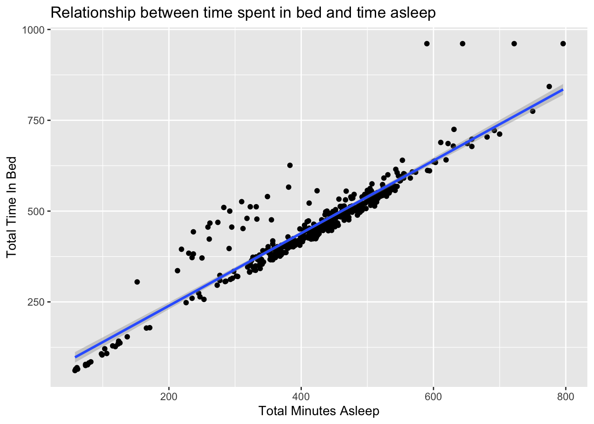
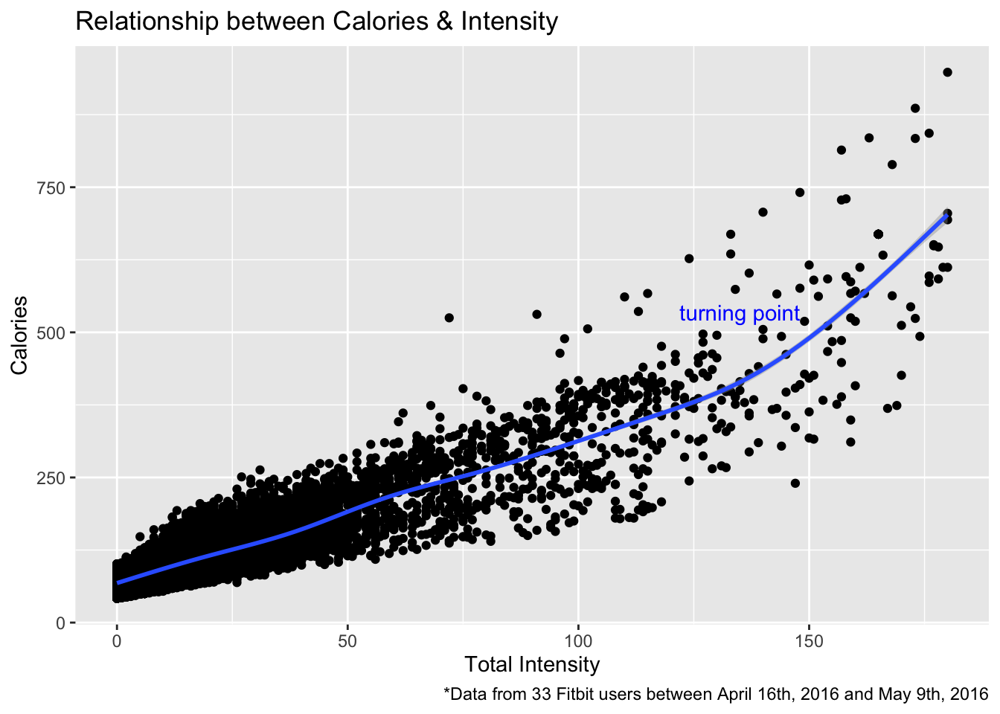

This is the Capstone project for Google Data Analytics Certificate. In this case study, I will share with you all the steps and analysis process on how I identify trends in the wearable technology trends in the market and provide insights to Bellabeat, a high-tech manufacturer of health-focused products for women, on guiding their data-driven marketing strategy.
Provide marketing suggestions on how to acquire more users for the Bellabeat app and keep user retention rate high.
Data set used in this project is the FitBit Fitness Tracker Data (CC0: Public Domain, dataset made available through Mobius). https://www.kaggle.com/datasets/arashnic/fitbit/metadata
install.packages('tidyverse',repos = "http://cran.us.r-project.org")##
## The downloaded binary packages are in
## /var/folders/c3/0d4b9fv96pz_xpkrmsvwbyw00000gn/T//RtmpMsmVjo/downloaded_packagesinstall.packages("rmarkdown",repos = "http://cran.us.r-project.org")##
## The downloaded binary packages are in
## /var/folders/c3/0d4b9fv96pz_xpkrmsvwbyw00000gn/T//RtmpMsmVjo/downloaded_packageslibrary(tidyverse)Here we’ll create dataframes for each csv file that we’ve uploaded and will use for analysis later.
sleep_day <- read.csv("sleepDay_merged.csv")
daily_activity <- read.csv("dailyActivity_merged.csv")
daily_calories<- read.csv("dailyCalories_merged.csv")
daily_steps<- read.csv("dailySteps_merged.csv")
daily_intensity<- read.csv("dailyIntensities_merged.csv")
weight<- read.csv("weightLogInfo_merged.csv")
hourly_calories <- read.csv("hourlyCalories_merged.csv")
hourly_steps<- read.csv("hourlySteps_merged.csv")
hourly_intensity<- read.csv("hourlyIntensities_merged.csv")Take a look at the daily_activity data.
glimpse(daily_activity)## Rows: 940
## Columns: 15
## $ Id <dbl> 1503960366, 1503960366, 1503960366, 150396036…
## $ ActivityDate <chr> "4/12/2016", "4/13/2016", "4/14/2016", "4/15/…
## $ TotalSteps <int> 13162, 10735, 10460, 9762, 12669, 9705, 13019…
## $ TotalDistance <dbl> 8.50, 6.97, 6.74, 6.28, 8.16, 6.48, 8.59, 9.8…
## $ TrackerDistance <dbl> 8.50, 6.97, 6.74, 6.28, 8.16, 6.48, 8.59, 9.8…
## $ LoggedActivitiesDistance <dbl> 0, 0, 0, 0, 0, 0, 0, 0, 0, 0, 0, 0, 0, 0, 0, …
## $ VeryActiveDistance <dbl> 1.88, 1.57, 2.44, 2.14, 2.71, 3.19, 3.25, 3.5…
## $ ModeratelyActiveDistance <dbl> 0.55, 0.69, 0.40, 1.26, 0.41, 0.78, 0.64, 1.3…
## $ LightActiveDistance <dbl> 6.06, 4.71, 3.91, 2.83, 5.04, 2.51, 4.71, 5.0…
## $ SedentaryActiveDistance <dbl> 0, 0, 0, 0, 0, 0, 0, 0, 0, 0, 0, 0, 0, 0, 0, …
## $ VeryActiveMinutes <int> 25, 21, 30, 29, 36, 38, 42, 50, 28, 19, 66, 4…
## $ FairlyActiveMinutes <int> 13, 19, 11, 34, 10, 20, 16, 31, 12, 8, 27, 21…
## $ LightlyActiveMinutes <int> 328, 217, 181, 209, 221, 164, 233, 264, 205, …
## $ SedentaryMinutes <int> 728, 776, 1218, 726, 773, 539, 1149, 775, 818…
## $ Calories <int> 1985, 1797, 1776, 1745, 1863, 1728, 1921, 203…Take a look at the weight data.
str(weight)## 'data.frame': 67 obs. of 8 variables:
## $ Id : num 1.50e+09 1.50e+09 1.93e+09 2.87e+09 2.87e+09 ...
## $ Date : chr "5/2/2016 11:59:59 PM" "5/3/2016 11:59:59 PM" "4/13/2016 1:08:52 AM" "4/21/2016 11:59:59 PM" ...
## $ WeightKg : num 52.6 52.6 133.5 56.7 57.3 ...
## $ WeightPounds : num 116 116 294 125 126 ...
## $ Fat : int 22 NA NA NA NA 25 NA NA NA NA ...
## $ BMI : num 22.6 22.6 47.5 21.5 21.7 ...
## $ IsManualReport: chr "True" "True" "False" "True" ...
## $ LogId : num 1.46e+12 1.46e+12 1.46e+12 1.46e+12 1.46e+12 ...Take a look at the sleep data summary.
sleep_day %>%
summary()## Id SleepDay TotalSleepRecords TotalMinutesAsleep
## Min. :1.504e+09 Length:413 Min. :1.000 Min. : 58.0
## 1st Qu.:3.977e+09 Class :character 1st Qu.:1.000 1st Qu.:361.0
## Median :4.703e+09 Mode :character Median :1.000 Median :433.0
## Mean :5.001e+09 Mean :1.119 Mean :419.5
## 3rd Qu.:6.962e+09 3rd Qu.:1.000 3rd Qu.:490.0
## Max. :8.792e+09 Max. :3.000 Max. :796.0
## TotalTimeInBed
## Min. : 61.0
## 1st Qu.:403.0
## Median :463.0
## Mean :458.6
## 3rd Qu.:526.0
## Max. :961.0Looks like there may be more participants in the daily activity data set than the sleep and weight data sets.
n_distinct(daily_activity$Id)## [1] 33n_distinct(sleep_day$Id)## [1] 24n_distinct(weight$Id)## [1] 8How many observations are there in each data frame?
nrow(daily_activity)## [1] 940nrow(sleep_day)## [1] 413Finding: Based on the CDC latest recommendations, an adult should complete Vigorous-intensity aerobic activity for 75 minutes every week and Muscle-strengthening activities on 2 or more days a week. Here’s the link for more detailed information: https://www.cdc.gov/physicalactivity/basics/adults/index.htm
In the below analysis, I’ve calculated the average weekly Very Active Minutes for each person in the data set and checked if they met the CDC recommendations. Out of the 33 people, 16 failed to meet the CDC recommendations, which was around 57.6% of the total population in the data set.
Create a new data frame from daily activity and calculate each participants average weekly active minutes to see if they meet the CDC recommendations.
AvgWeeklyActive <-
daily_activity %>%
group_by(Id) %>%
summarize(AvgHIntensityMins=mean(VeryActiveMinutes),SumHIntensityMins=sum(VeryActiveMinutes)) %>%
add_tally(name="ActiveDays") %>%
mutate(AvgWeeklyActiveMins = SumHIntensityMins/ActiveDays*7) %>%
mutate(AboveCDCrec = ifelse(AvgWeeklyActiveMins >= 75, "yes","no"))Count the percentages of the participants within the data set that meet the CDC recommendations.
AvgWeeklyActive %>%
count(AboveCDCrec,name="headcount") %>%
mutate(Percentage = round(headcount/nrow(AvgWeeklyActive),3))## # A tibble: 2 × 3
## AboveCDCrec headcount Percentage
## <chr> <int> <dbl>
## 1 no 19 0.576
## 2 yes 14 0.424Finding: There’s too little sample data (only data from 8 participants) in the weight data frame to compare.
wgtact_combine<- merge(weight, daily_activity, by="Id")
wgtact_combine %>%
group_by(Id) %>%
summarize(AvgWeightP=mean(WeightPounds),AvgSedentaryMins=mean(SedentaryMinutes))## # A tibble: 8 × 3
## Id AvgWeightP AvgSedentaryMins
## <dbl> <dbl> <dbl>
## 1 1503960366 116. 848.
## 2 1927972279 294. 1317.
## 3 2873212765 126. 1097.
## 4 4319703577 160. 736.
## 5 4558609924 154. 1094.
## 6 5577150313 200. 754.
## 7 6962181067 136. 662.
## 8 8877689391 188. 1113.Finding: From the graph below, we can see that the hypothesis is mostly correct. However, there are quite a few data points that diverge from the linear trend line, indicating some people are spending much more time in bed than the time they are asleep.
ggplot(data=sleep_day,mapping=aes(x=TotalMinutesAsleep,y=TotalTimeInBed))+
geom_point()+
geom_smooth(method=lm)+
labs(title="Relationship between time spent in bed and time asleep",x='Total Minutes Asleep',y='Total Time In Bed')## `geom_smooth()` using formula 'y ~ x'
One of the possible explanations could be sleep latency, commonly known as insomnia. Based on a scientific paper done by D.Thomas and W.M.Anderson regarding sleep latency, it’s most common for healthy adults to fall asleep within 20 minutes. In order to see if the sleep log entries in the data set represent a healthy population, I took the average of the difference between total time spent in bed and total minutes asleep to see how long it took those people to fall asleep normally.
Create a new data frame sleep day and calculate each participants average time to fall asleep (divided by total sleep records because people may sleep multiple times a day) to see if they take too long to fall asleep.
Time_to_fall_asleep<-
sleep_day %>%
mutate(AvgTimetoFallAsleep = (TotalTimeInBed-TotalMinutesAsleep)/TotalSleepRecords) %>%
mutate(TooLongtoFallAsleep = ifelse(AvgTimetoFallAsleep > 20, "yes","no"))Count the percentages of entry that were abnormal.
Finding: From the data summary table, we can tell that close to 60% of the total entries took too long to fall asleep, indicating that people represented in the data set may have a sleep latency issue which requires further check-ups to determine if medical interventions are needed.
Time_to_fall_asleep %>%
count(TooLongtoFallAsleep,name="distribution") %>%
mutate(Percentage = round(distribution/nrow(Time_to_fall_asleep),3))## TooLongtoFallAsleep distribution Percentage
## 1 no 169 0.409
## 2 yes 244 0.591Finding: From the graph below, we can see that the hypothesis is mostly correct. However, we can see from the graph that the trend line isn’t linear and that when the intensity level hits close to 140, calories burnt rate increases faster than that of lower intensity level.
Combine the data frames, hourly calories and hourly intensity, so we have all the columns needed for the analysis.
hrly_calint <- merge(hourly_calories, hourly_intensity, by=c("Id","ActivityHour"))Plot the relationship graph.
ggplot(data= hrly_calint,mapping=aes(x=TotalIntensity,y=Calories))+
geom_point()+
geom_smooth()+
labs(title='Relationship between Calories & Intensity', x='Total Intensity', caption='*Data from 33 Fitbit users between April 16th, 2016 and May 9th, 2016')+
annotate(geom="text",x=135,y=535,label="turning point",color='blue')## `geom_smooth()` using method = 'gam' and formula 'y ~ s(x, bs = "cs")'
Out of the 33 people in the data set, 16 of them, 57.6%, failed to meet the CDC recommendations for weekly adult activity amount. close to 60% of the total entries of the people represented in the data set may have a sleep latency issue which requires further check-ups to determine if medical interventions are needed. *Calories and intensity’s relationship isn’t exactly linear. Once the intensity level hits close to 140, calories burnt rate increases faster than that of lower intensity level.
In order to grow Bellabeat’s presence, I’d suggest a few marketing angles for the Bellabeat app.
From a user acquisition perspective, I’d recommend Bellabeat’s
marketing team to utilize digital marketing channels like Google,
Facebook, Snapchat, Twitter and etc. These channels provide unique
opportunities to Bellabeat since these channels offer app ads, allowing
a smooth journey from seeing the advertisement to being directed to the
App Store/Play Store. In terms of the campaign focus, based on the
analyses above, we can target
1) people who may have downloaded sleeping apps, indicating that they
may have sleep latency issues, because using Bellbeat’s app can provide
them with more insights and keep tabs on their day-to-day activity
and/or
2) people who may have workout habits or workout apps installed because
with Bellabeat app tracking their activitiy intensity level, they can
know clearly what types of workouts are the most suitable for their
bodies and potentially most efficient, especially for peole who do
HIIT(High Intensity Interval Trainings).
For the above suggestions, Bellabeat would need more information on the target demographics which can potentially be acquired through tools like data.ai.
From a PR perspective, I’d recommend to work with PR agencies that have relationships with top and mid tier publishers to build links to the Bellabeat website, help with SEO and create more of an online presence. Additionally, Bellabeat should work on ASO, such as increase app store ratings, research on keywords ranking and screenshot optimization and aim to get featured on charts or shown on similar apps list, update app store screenshots to increase relevancy and etc.
In addition to the above suggestions for the marketing team, depending on the budget allocation and big-picture alignment such as the focus of marketing whether it’s new user acquisition or re-engagement, more items should be discussed and explored.